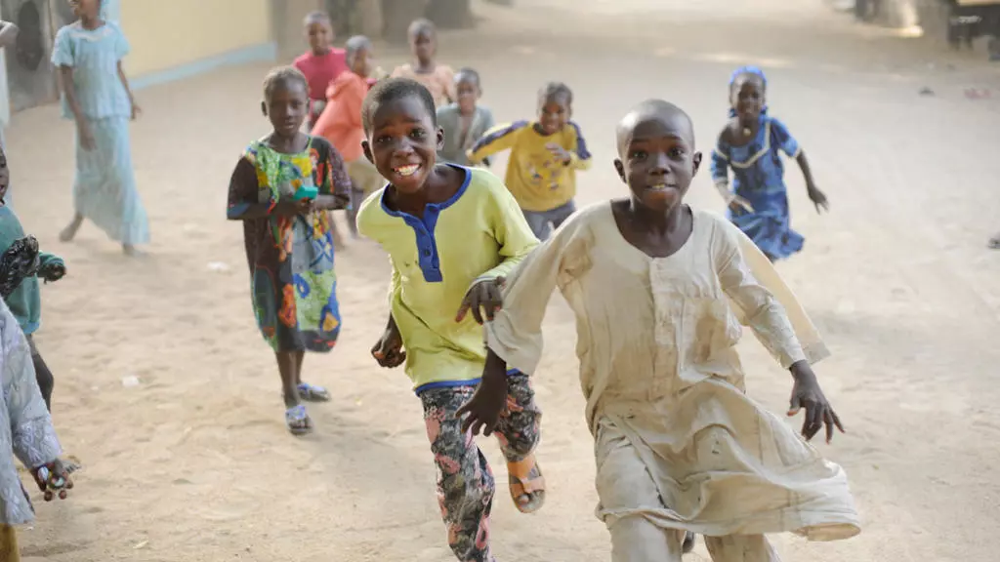

Entre le XVIIe et le XVIIIe siècle la bande côtière entre le royaume Ashanti, dans l’actuel Ghana et celui du Danhomè dans l’actuel Bénin, était un espace libre mais déjà visité par les Portugais, Danois et Hollandais. Ils y avaient établi des ponts de commerce. Plus tard un explorateur allemand, Gustav Nachtigal, signa un accord de protectorat (Schutzgebiet), le 5 juillet 1884 avec un chef local, le roi Mlapa III qui contrôlait un territoire autour du lac Togo. De ce protectorat l’Allemagne établit son autorité sur l’intérieur du pays en baptisant ce périmètre d’un peu plus de 90 000 km², Togoland.
L’Allemagne tient à être présente sur cette côte où la présence des Français et des Anglais est déjà effective. Les Anglais qui ont conquis le grand royaume ashanti veulent étendre leur autorité sur cette bande de terre avec leurs alliés de la famille Lawson opposés aux maisons de commerce, dont la compagnie marseillaise Fabre, qui sollicitent la protection de la France. C’est par ce protectorat que l’Allemagne réduit l’influence des uns et des autres en installant ses propres commerçants.
Lors de la Conférence de Berlin en 1885, consacrant le partage de l’Afrique entre nations européennes, l’autorité de l’Allemagne est reconnue sur ce territoire.
La Première Guerre mondiale, 1914-1918
Les Européens ont transporté sur la côte ouest-africaine leurs oppositions du Vieux Continent. Les combats font rage entre la France et l’Allemagne mais également au Togo. L’armistice signé le 11 novembre 1918 entérine la capitulation de l’Allemagne en Europe, mais c’était déjà le cas, le 25 août 1914 sur le sol africain : les Allemands ont rendu les armes au Togo où ils se sont farouchement opposés aux Français et aux Anglais.
10 juillet 1919. La Société des nations confirme le partage du Togo anciennement sous autorité allemande entre la France qui s’est octroyée les 2/3 du territoire et le Royaume-Uni qui en garde le 1/3. Le Togo est donc sous mandant de la Société des nations avec deux tutelles : l’une «Togo français» et une autre à l’ouest «British Togo».
Les dates clés de l'histoire du Togo
22 Juin 1940. La France signe l’armistice en forêt de Compiègne avec un nouveau gouvernement installé à Vichy. L’Allemagne occupe la France. La conséquence directe pour le Togo est que la frontière entre les deux zones d’influence française et britannique est fermée. L’évolution de la guerre en Europe en faveur des alliés détend la situation au Togo.
13 décembre 1946. Les Nations unies reprennent la main et le Togo est à nouveau sous tutelle. Les présences française et britannique sur le territoire sont confirmées en 1948. Pour les Britanniques il apparait évident d’accoler la bande de terre dont ils ont hérité depuis la fin de la Première Guerre mondiale à la Gold Coast pour en faire un même pays, l'actuel Ghana. Un référendum est organisé en 1956, côté français, pour valider le choix de rattachement à la France. Un nouveau référendum organisé en 1958 confirme une évolution séparée du Togo francophone à côté du Dahomey.
Après la Seconde Guerre mondiale, la structuration de cette partie de l'espace colonial français se met en place et le Togo intègre l’Afrique occidentale française (AOF) et constitue une seule circonscription avec le Dahomey, représentée par un seul et unique député, sans toutefois évoluer vers une unification.
C’est aussi pendant cette période d’après guerre que la vie politique organisée par des autochtones se met en place. Sylvanus Olympio partisan d’un Etat réunifié crée le Comité de l’unité togolaise (CUT). Par ailleurs, avec Nicolas Grunitzky, le Parti togolais du progrès, rebaptisé Mouvement populaire togolais (MPT), milite pour une collaboration et association plus étroite avec la France (plus de détails de l'histoire des partis togolais, en anglais...).
27 avril 1958. Le référendum est remporté par le CUT. Sylvanus Olympio est Premier ministre. Son intention est de constituer un État réunifié « en récupérant » la partie rattachée à la Gold Coast et non d’accepter l’offre de Kwame Nkrumah (président du Ghana) d’unir leur deux pays. Son discours volontaire et ses actions de militant indépendantiste plaisent aux populations.
27 avril 1960. Indépendance du Togo.
9 avril 1961. Sylvanus Olympio est élu président de la République en battant son adversaire de toujours soutenu par la France, Nicolas Grunitzky. Le tout nouveau président élu, par une constitution de régime présidentiel, est qualifié de très autoritaire. De nombreux mécontentements, voire des déceptions apparaissent dans les différents rouages du nouvel Etat. Puis un refus catégorique de Sylvanus Olympio, d’intégrer dans l’armée ou dans les forces de sécurité d’anciens soldats togolais ayant servi l’armée française en Algérie ou en Indochine, est la goutte d’eau qui fait déborder le vase. Ces anciens de l’armée française, majoritairement originaires du nord du Togo décident de destituer le président.
13 janvier 1963. L’Afrique connaît son premier coup d’État postindépendance. Le président Sylvanus Olympio est assassiné. Parmi les insurgés, un certain sergent Etienne Eyadéma. Le comité insurrectionnel des militaires fait appel à Nicolas Grunitzky qui préside aux destinées du pays de 1963 à 1967.
13 janvier 1967. Quatre ans jour pour jour après le coup d’Etat de 1963, les militaires reprennent le pouvoir. Les institutions de la République sont suspendues et le 15 avril 1967, le lieutenant-colonel Etienne Eyadéma devient officiellement le président de la République, chef de gouvernement et ministre de la Défense. C’est le début de l’ère Eyadema.
Après avoir interdit tous partis politiques, il crée en 1969, le Rassemblement du peuple togolais (RPT). Dès le début des années 70, les associations de jeunes, de femmes et de travailleurs ont été constituées pour être intimement liées au RPT qui devient le parti-Etat en 1976. C’est la grande période des animations, du culte de la personnalité.
24 janvier 1974. Un accident de l’avion présidentiel à Sarakawa, dans le nord du Togo, dont le président sort vivant avec quelques légères blessures, est un motif supplémentaire de mobilisation nationale autour du chef. Le général Eyadéma est appelé «Timonier national». L’impérialisme international est accusé d’avoir intenté à la vie du président qui avait engagé une politique de nationalisation des industries, en l’occurrence la Compagnie togolaise des mines du Bénin, qui deviendra l’Office togolais des phosphates le 2 février 1974.
C’est aussi la période de la politique d’authenticité copiée sur le modèle zaïrois de Mobutu. Tous les prénoms catholiques et à consonance étrangères sont abandonnés au profit des prénoms nationaux. Etienne Eyadéma, devient Gnassingbé Eyadéma. Un peu comme dans le modèle bantou, son prénom est le patronyme de ses enfants.
Avril 1991. Le président Eyadéma est contraint d’accepter le multipartisme. C’était l’une des revendications qui ont participé à l’échauffement du climat social. Des grèves massives ont secoué le pays et les répressions policières avaient fait plusieurs centaines de morts selon les organisations des droits de l’homme.
8 juillet au 28 août 1991. La conférence nationale se tient à Lomé à l’instar de ce qui se passe ailleurs en Afrique. On se dit tout, dans l’espoir d’enterrer l’ancien pouvoir. Le régime devient semi-présidentiel avec la nomination d’un Premier ministre ; un Haut-Conseil de la république est instauré. Mais dès le mois de décembre 1991, le général Eyadéma récupère toutes ses prérogatives avec l’appui de l’armée. Tout va très vite, en septembre 1992 il fait adopter une nouvelle Constitution. De nouvelles grèves sont lancées, les Togolais fuient la répression et les assassinats politiques.
25 janvier 1993. La police réprime à nouveau des manifestations faisant plusieurs dizaines de morts. L’attitude du régime togolais est partout dénoncée. L’Union européenne suspend sa coopération avec le Togo. Mais le régime ne varie pas. Le président et son parti, le Rassemblement du peuple togolais (RPT)remportent toutes les élections législatives. Les accords avec l’opposition volent en éclats.
8 février 2002. Le code électoral est modifié avant la Constitution en décembre 2002 qui ne limite plus à deux le nombre de mandats présidentiels. Gnassingbé Eyadéma se fait réélire en 2003 et se maintient au pouvoir.

5 février 2005. Malade, Gnassingbé Eyadéma est transporté par avion pour des soins à l’étranger mais il décède à bord suite à une crise cardiaque. Pour autant, le pouvoir n’est pas perdu. Par un tour de passe-passe, le fils du président, Faure Gbassingbé est porté à la magistrature suprême.
24 avril 2005. L’élection présidentielle confirme Faure Gnassingbé comme nouveau président du Togo alors que l’opposition conduite par Emmanuel Bob Akitani déclare avoir remporté le scrutin avec 70% des suffrages. Cinq ans plus tard Faure Gnassingbé se représente à la présidentielle et l’emporte à nouveau après validation des résultats, le 18 mars 2010, par la Cour constitutionnelle. Il a été accrédité de 60,88% des voix alors que le candidat de l’Union des forces de changement (UFC), Jean-Pierre Fabre aurait recueilli 33,93% des suffrages.